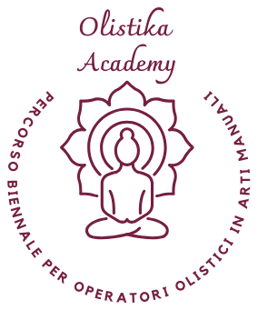
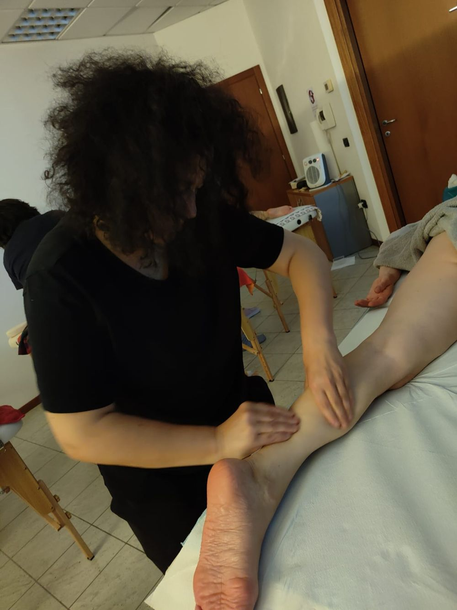

Corso di massaggio a Modena. Si impara con le mani, in aula.
Massaggio olistico dalle basi: prima la tecnica, la sequenza, il protocollo. Poi l'ascolto, per costruire il trattamento sulla persona che hai davanti. In piccoli gruppi, con pratica sul lettino a ogni lezione.
- Si parte dalle basi
- Pratica sul lettino
- Piccoli gruppi
- Attestato di partecipazione


La tecnica è il punto di partenza.
Poi impariamo ad ascoltare.
All'inizio impariamo dove mettere le mani. Una tecnica, una sequenza, un protocollo. È quello che dà sicurezza.
Ma davanti alle nostre mani non c'è un protocollo: c'è una Persona. Due persone possono portare la stessa tensione e avere bisogno di attenzioni diverse. Qui impari a sentirlo.
Il massaggio olistico, dalle basi al trattamento personalizzato
- Il tocco consapevole. Qualità del contatto, pressione, ritmo, posizione di chi massaggia.
- Tecniche e sequenze. Un protocollo completo da cui partire con sicurezza.
- Anatomia palpatoria. Conoscere il corpo sotto le mani.
- Dal protocollo alla persona. Non solo tecniche predefinite: creare il trattamento adatto a chi hai davanti e rispondere al suo «qui e ora».
- Il massaggio come strumento di benessere. Consapevolezza corporea, prevenzione, accompagnamento della persona nel tempo.

I moduli di massaggio del percorso
Si comincia dal massaggio olistico base, a fine novembre. Le lezioni sono nel fine settimana, in via Capilupi 21 a Modena.
- 27 · 28 · 29 novembre 2026Massaggio olistico baseManuela Pignatari
- 19 dicembre 2026Tecniche di massaggio e deontologiaManuela Pignatari
- 17 · 18 aprile 2027Massaggio drenanteManuela Pignatari
- 12 · 13 giugno 2027Massaggio del fuocoManuela Pignatari
- Secondo anno · 2027-2028Massaggio miofasciale, californiano, metamerico e bioemozionaleManuela Pignatari
Sono moduli del biennio per Operatore Olistico. Se ti interessa frequentarne uno solo, chiedi a Manuela disponibilità e costo.
Vuoi imparare il massaggio o farne un lavoro?
Puoi partire da un corso e decidere dopo. Ogni persona sceglie il punto da cui iniziare.
Corso singolo o mini percorso
Impari il massaggio in un corso dedicato e ricevi l'attestato di partecipazione. È la strada giusta se vuoi provare, se lo fai per te o se vuoi aggiungere una tecnica a quelle che già conosci.
Chiedi le prossime date →Biennio per Operatore Olistico
Il massaggio insieme a riflessologia, Medicina Tradizionale Cinese, aromaterapia e floriterapia: la formazione completa in arti manuali, in due anni. Si parte il 24 ottobre 2026: 2.800 € + IVA l'anno, anche a rate mensili.
Scopri il percorso biennale →«Avevo trovato un percorso online, però non c'era nulla di pratico, ma solo teorico. Poi trovo il percorso della Manu. E oggi è la cosa migliore che ho fatto per me.»
Sul corso di massaggio
È un corso di massaggio per principianti?
Sì, si parte dalle basi: all'inizio impariamo dove mettere le mani. Non serve alcuna esperienza.
Con questo corso posso diventare massaggiatore?
Qui ti formi nel massaggio olistico, cioè nel massaggio per il benessere della persona. Chi vuole farne una professione segue il biennio per Operatore Olistico, professione libera disciplinata dalla Legge 4/2013. Non è una formazione sanitaria: il massaggio terapeutico e riabilitativo spetta a figure come il fisioterapista.
Rilasciate un attestato?
Sì, al termine di ogni corso ricevi l'attestato di partecipazione.
Dove e quando si tiene? Quanto costa?
In via Capilupi 21 a Modena, in presenza, nel fine settimana. Il massaggio olistico base è il 27, 28 e 29 novembre 2026, dentro il primo anno del biennio, che costa 2.800 € + IVA l'anno. Per frequentare un solo modulo chiedi a Manuela disponibilità e costo.
Posso passare poi al biennio?
Sì. C'è chi sceglie un corso, chi un mini percorso, chi il biennio: nel colloquio vediamo insieme come proseguire.
Chiedi le prossime date del corso di massaggio
Scrivi a Manuela: ti risponde lei, di persona. I gruppi sono piccoli.
- Referente Manuela Pignatari
- WhatsApp 393 965 2131
- Email manuela.pignatari@gmail.com
- Dove Via Capilupi 21, 41122 Modena